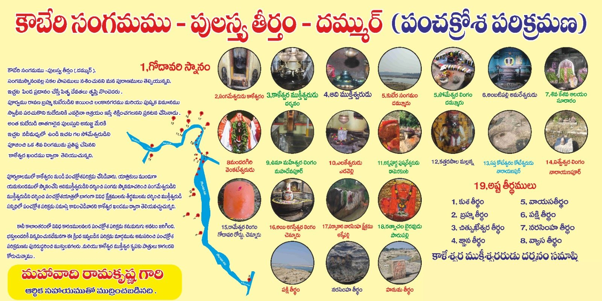

సంగమ స్థలం
ఈ సంగమ స్థలానికి మహారాష్ట్రలోని సోంనూర్, ఛత్తీస్గఢ్లోని భద్రకాళి మరియు తెలంగాణలోని దమ్ముర్ అనే గ్రామాలు హద్దులుగా ఉన్నాయి.
Kubera Sangamam, also called Pulastya Theertham, is the confluence of the Indravati and Godavari, bounded by the villages Somnur (Maharashtra), Bhadrakali (Chhattisgarh) and Dammur (Telangana).
ఇంద్రావతి నది కథ
పురాణ కథనం ప్రకారం ఒకానొక సమయంలో దేవేంద్రుడు తన భార్య ఇంద్రాణితో కలిసి దండకారణ్యంలో చంపక, చందన, మల్లి మొదలైన చెట్లు గల ఒక వనానికి వచ్చి, అక్కడి ప్రకృతి అందాలకు ముగ్ధుడై విహరిస్తుండగా, ఒకరోజు ఇంద్రుడు అక్కడి సునాబేడ అనే గ్రామానికి వచ్చి ఊదంతి అనే కన్యను చూచి మోహించి అక్కడే ఉండసాగాడు. ఇంద్రుని రాక గురించి ఇంద్రాణి చింతిస్తూ ఉండగా, ఇంద్రుడు ఊదంతితో కలిసి ఉండటం వల్ల రావడానికి అంగీకరించడం లేదని గ్రామ ప్రజలు తెలిపారు. అప్పుడు ఇంద్రాణి కోపంతో వారి కలయిక జరగకుండా శపించి తాను నదిగా మారింది. ఇంద్రుడు మరియు ఊదంతి కూడా నదులుగా మారిపోయారు. ఇంద్రుని భార్య ఇంద్రాణి పేరుపై ఆ నది ఇంద్రావతిగా పిలవబడుతోంది.
సోమేశ్వరుడు మరియు కుబేర ప్రతిష్ఠ
ఇంద్రావతి–గోదావరి సంగమ ప్రాంతమైన కుబేర సంగమంలో నది గర్భంలో మహా మహిమాన్వితమైన సోమేశ్వరుడిగా పేర్కొనబడిన శివలింగం ఉంది. పూర్వం రావణ బ్రహ్మ తన సోదరుడైన కుబేరుని యుద్ధంలో గెలిచి లంకా పట్టణాన్ని, పుష్పక విమానాన్ని సంగ్రహించి, కుబేరునికి ఎవరైనా ఆశ్రయం ఇస్తే వారిని శిక్షిస్తానని ప్రకటించాడు. అప్పుడు కుబేరుడు తన తాత పులస్త్యుని వద్దకు వెళ్లి శరణు వేడగా, గోదావరి సంగమ ప్రదేశంలో ఉండమని, రావణ బ్రహ్మ అక్కడకు రాడని చెప్పాడు. అంతట కుబేరుడు సంగమ ప్రదేశంలోని సోమేశ్వరుడిని సేవించి వరాలు పొంది, తరువాత తన పేరుపై ఒక లింగాన్ని ప్రతిష్ఠించాడని బ్రహ్మ పురాణం వల్ల తెలుస్తోంది.
ఆధ్యాత్మిక ప్రాముఖ్యత
కుబేర సంగమం మహా పాపాలను నశింపజేస్తుంది. ఇక్కడ స్నానం చేసి యథావిధిగా పూజించి పితృదేవతలకు పిండప్రదానం చేస్తే ముక్తి పొందగలరని కాళేశ్వర ఖండంలో పేర్కొనబడింది.
Source: Kaleshwara Khandam; Brahma Purana.
పంచక్రోశ పరిక్రమణ పటం
చిత్రంపై నొక్కి పెద్దదిగా చూడండి.

యాత్రికులకు సూచనలు
సంగమ ప్రాంతాలలో నీటి ప్రవాహం మారుతూ ఉంటుంది కాబట్టి పిల్లలు, వృద్ధులు స్నానం చేసేటప్పుడు జాగ్రత్త వహించాలి. స్థానిక మార్గదర్శకుల సూచనలు పాటించండి.